С помощью алгоритма фронта волны найти расстояния в ориентированном графе D: диаметр, радиус и центры.
Пусть 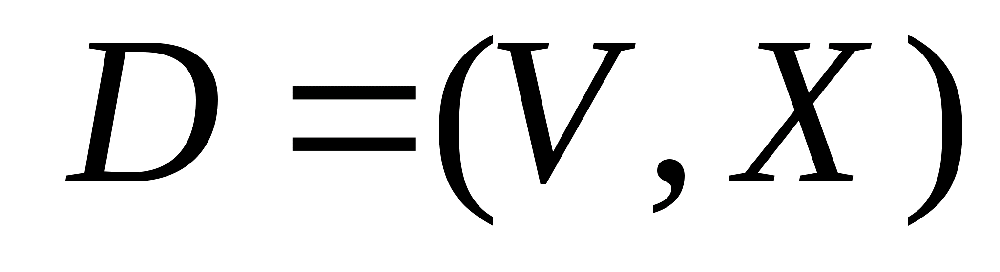 ориентированный граф с n 2 вершинами и v,w (vw) – заданные вершины из V.
В противном случае мы нашли минимальный путь из в и его длина равна k. Последовательность вершин
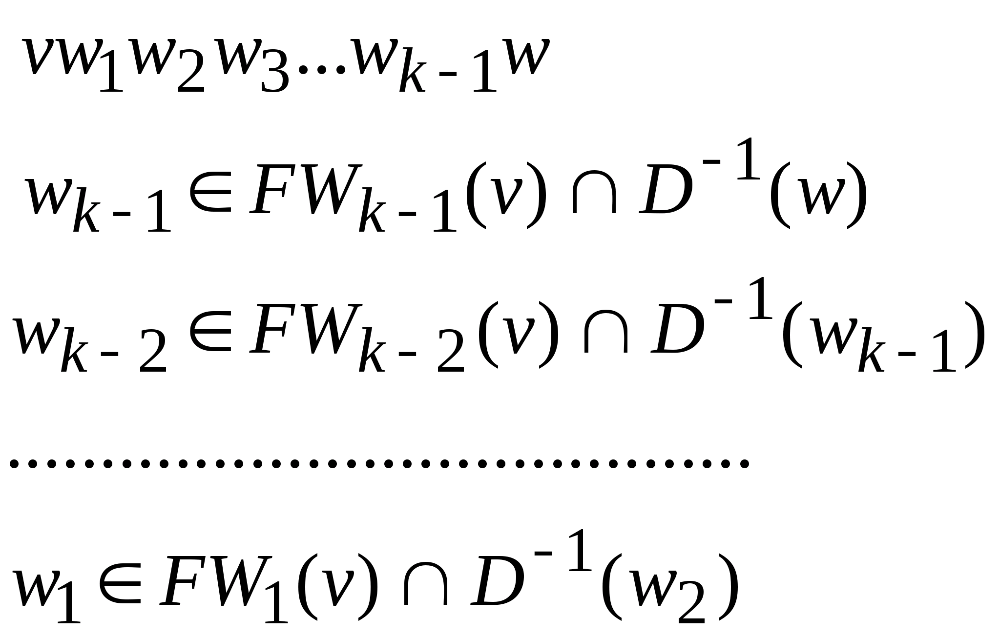есть этот минимальный путь. Работа завершается.
Замечания
Чтобы найти расстояния в ориентированном графе, необходимо составить матрицу минимальных расстояний R(D)между его вершинами. Это квадратная матрица размерности 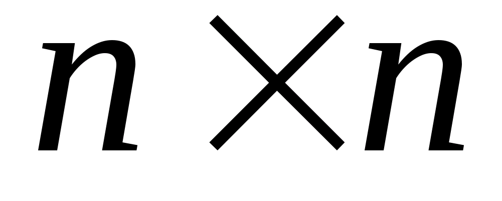, элементы главной диагонали которой равны нулю (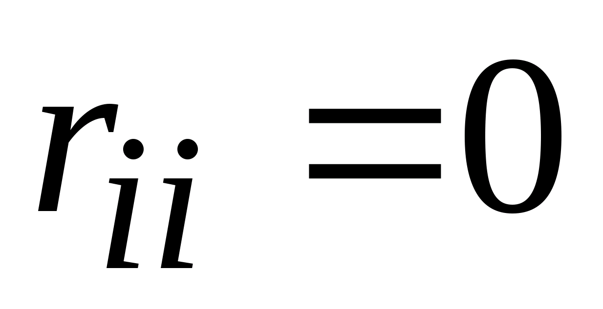, i=1,..,n).
Сначала составляем матрицу смежности. Затем переносим единицы из матрицы смежности в матрицу минимальных расстояний (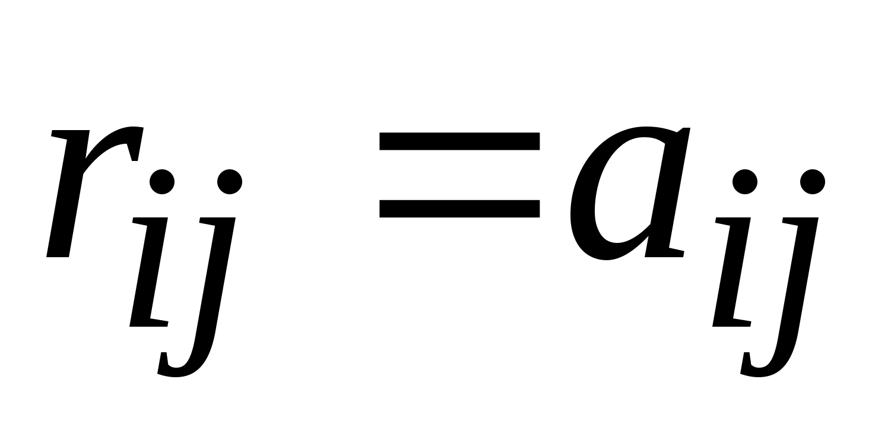, если 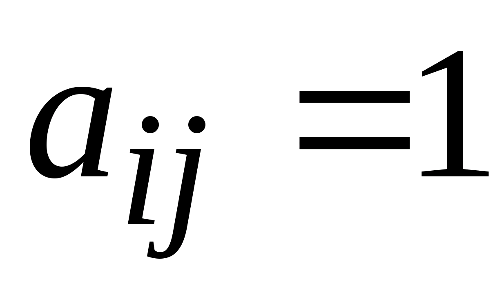 ). Далее построчно заполняем матрицу следующим образом.
Рассматриваем первую строку, в которой есть единицы. Пусть это строка − i-тая и на пересечении с j-тым столбцом стоит единица (то есть 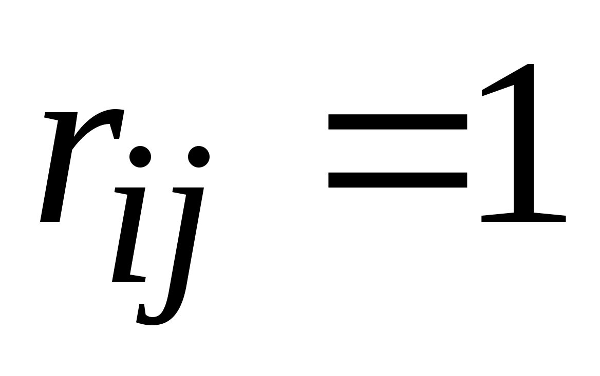 ). Это значит, что из вершины 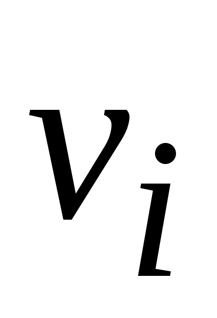 можно попасть в вершину 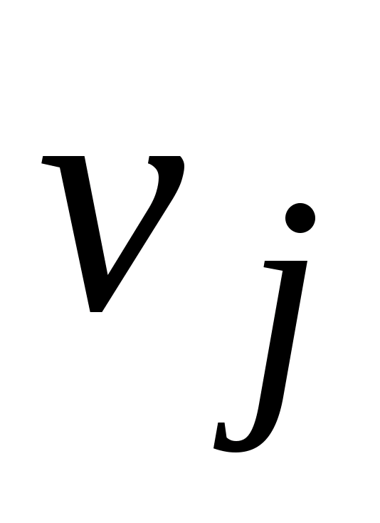 за один шаг. Рассматриваем j-тую строку (строку стоит вводить в рассмотрение, если она содержит хотя бы одну единицу). Пусть элемент 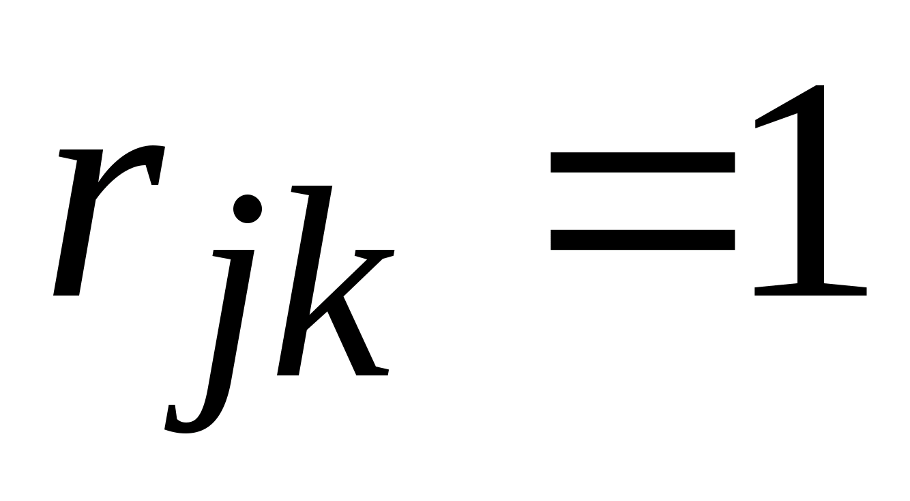. Тогда из вершины в вершину 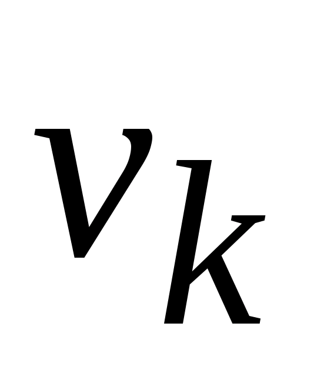 можно попасть за два шага. Таким образом, можно записать 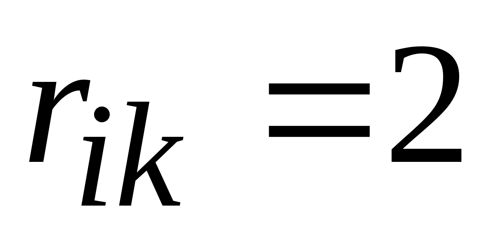 . Следует заметить, что если в рассматриваемых строках две или более единиц, то следует прорабатывать все возможные варианты попадания из одной вершины в другую, записывая в матрицу длину наикратчайшего из них.